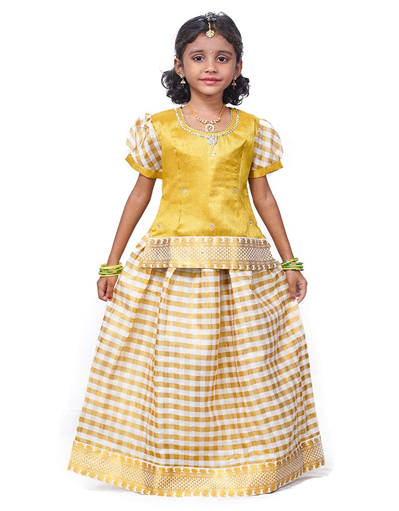
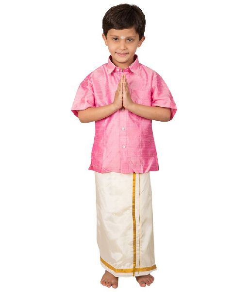
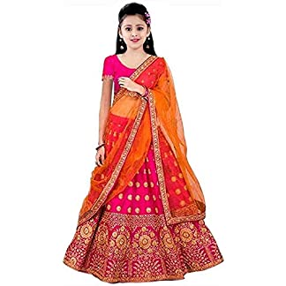
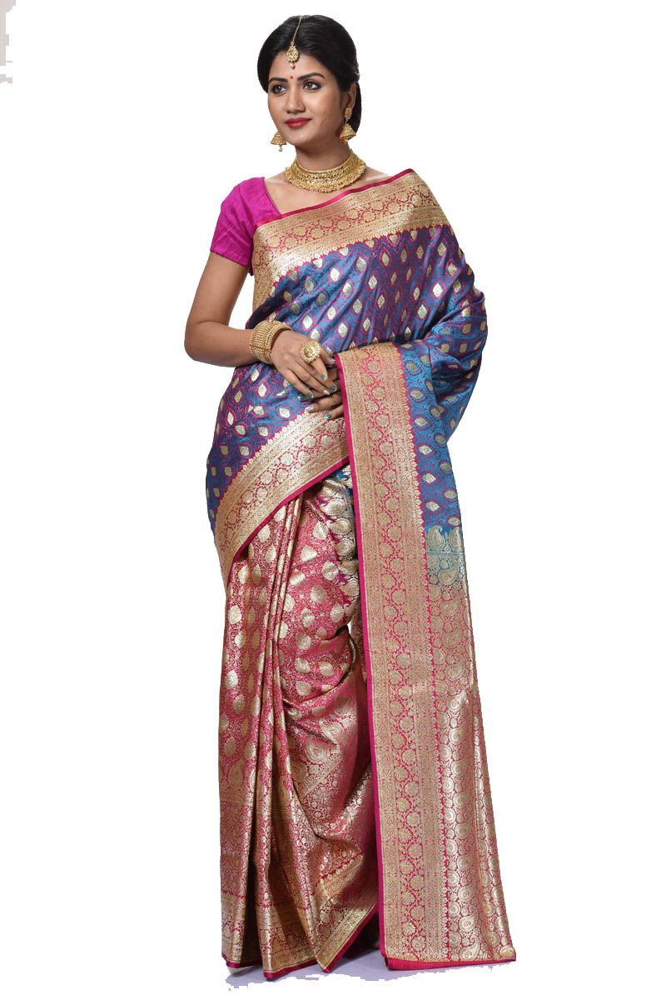
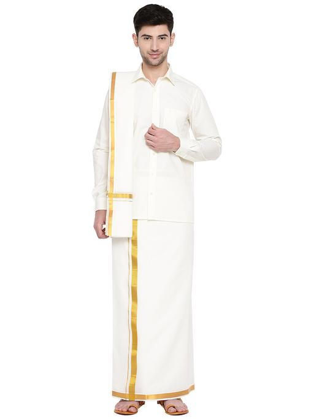
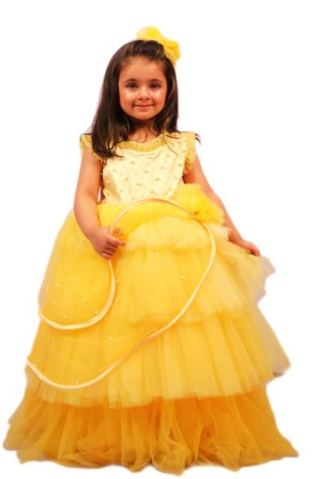
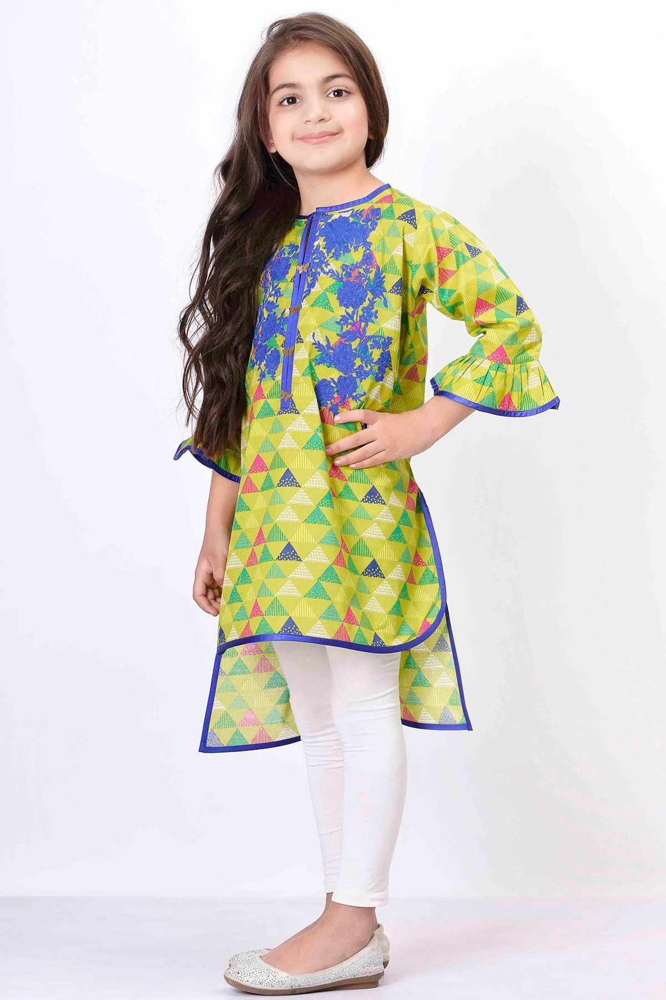
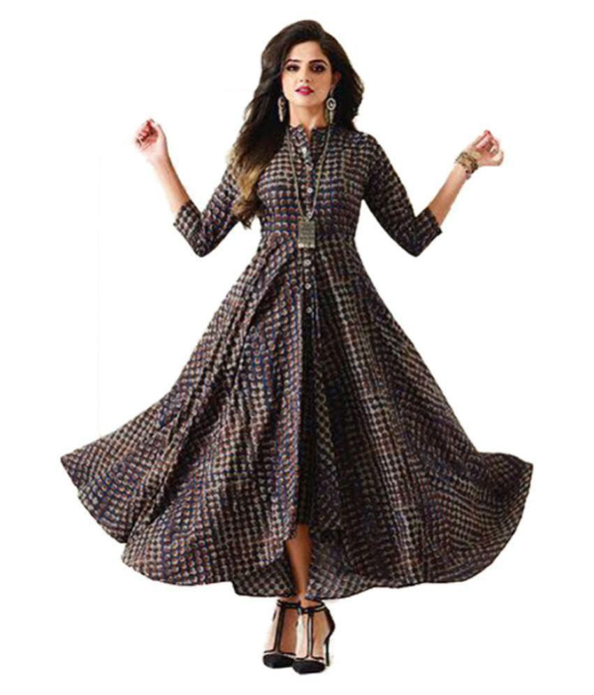
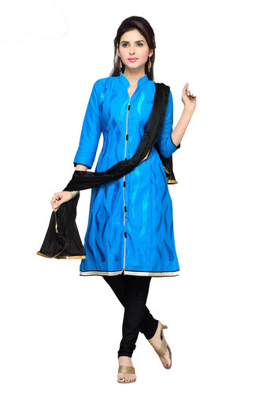

Welcome To Our Tamil Nadu Dress Court
Tamil Nadu Traditional Wears
Traditional Wear for Kids
When it comes to festivals or Indian weddings, we love to dress up our children in kids salwar kameez or a kids lehenga choli.Traditional dress may be defined as the ensemble of garments, jewelry, and accessories rooted in the past that is worn by an identifiable group of people. Though slight changes over time in color, form, and material are acknowledged, the assemblage seems to be handed down unchanged from the past. Traditional dress or costume is a phrase used widely both by the general public and writers on dress. It conjures up images of rural people dressed in colorful, layered, exotic clothing from an idealized past in some faraway place. This notion of traditional dress has been scrutinized and found inadequate by many researchers and scholars, but its uncritical use continues into the twenty-first century. The phrase traditional dress or costume is often used interchangeably with the terms ethnic, regional, and folk dress. For a concise discussion of this terminology see Welters and for a fascinating look at how the term is used try a Web search on the words "traditional costume.
1. Pattu Pavadai
2. Vesti Sattai
3. Pavadai Dhavani
Charactertics Of Children's Wear
Fabric choices, openings and fastenings, fit and ease, trimmings used are all major considerations when designing children's wear. Some other factors a designer designing for children's clothing should focus on are the changing shape of the growing kid and different proportions of the different parts of the body.
Traditional Wear for Women and Men
Tamil Nadu traditional costumes are very famous for every traditional activity. The temples, rich culture of Tamil Nadu are well respected by all Indians. Especially Tamilians give respect to wear their traditional dresses. The traditional dress of Men in Tamil Nadu is Lungi. They also called Dhoti with Angavastram and a shirt. The women wear traditional sari and blouse. The dress of Tamil Nadu People admired and liked by everyone.
1. Pattu Saree
2. Vesti Sattai
3. Pavada Davani

Charactertics Of Women and Men Wear
The saris are very famous in Tamil Nadu. There are many materials used to weave the saris. They are like cotton, silk, crepe silk, organza, georgette and patola silk. The women in Tamil Nadu are wearing rich culture saris. The young girls wear full-length short blouse and shawl, this style of wearing is called Pavada, which also known as half sari.
There are not more variety costumes to the men according to their tradition. Generally, they use Lungi with white shirt and angavastra. The lungies available in different colours, but pure white lungies are the traditional costumes to the men in Tamil Nadu and also marriage costumes. The young ones wear the lungies in various colours. The men interest to wear Angavastram.
Fashion Wear for Kids
Fashion is the form of clothing, accessories, and furniture. It can be used by everyone. Fashion is a source of looking better/attractive.Children's clothing or kids' clothing is clothing for children who have not yet grown to full height. Children's clothing is often more casual than adult clothing, fit for play and rest.fashion, style, mode, vogue, fad, rage, craze mean the usage accepted by those who want to be up-to-date. fashion is the most general term and applies to any way of dressing, behaving, writing, or performing that is favored at any one time or place.
1. Gown/Frock
2. Jeans and Shirt

3. Kurti and Legging
Charactertics Of Children's Wear
Children will need to wear clothing which they can manage themselves. This will support their growing independence in using their self-help skills and ensure they can play unimpeded indoors and outside.To simplify this task for parents, we have prepared an overview of the most suitable fabrics for children's clothing.
Fashion Wear for Women and Men
Fashion is a form of self-expression and autonomy at a particular period and place and in a specific context, of clothing, footwear, lifestyle, accessories, makeup, hairstyle, and body posture. In its everyday use, the term implies a look defined by the fashion industry as that which is trending. Everything that is considered fashion is available and popular by the fashion system. apparel, clothing. An outer garment (as for a woman or girl) usually consisting of a one-piece bodice and skirt. overing, adornment, or appearance appropriate or peculiar to a particular time.
1. Maxi Dress
2. Jeans and T-Shirt

3. Chudidhar
Charactertics Of Women and Men Wear
Women usually wear different colored saris (sarees) which are unstitched flowing fabrics of about four to nine yards, depending on the size of the woman's body.Men usually wear a dress called veshti (lungi) and shirt. However, due to the modernization of Chennai, people are commonly seen wearing western attires including shirts, jeans, and t-shirts. Although, western wear is not very popular except in the urbanized areas.